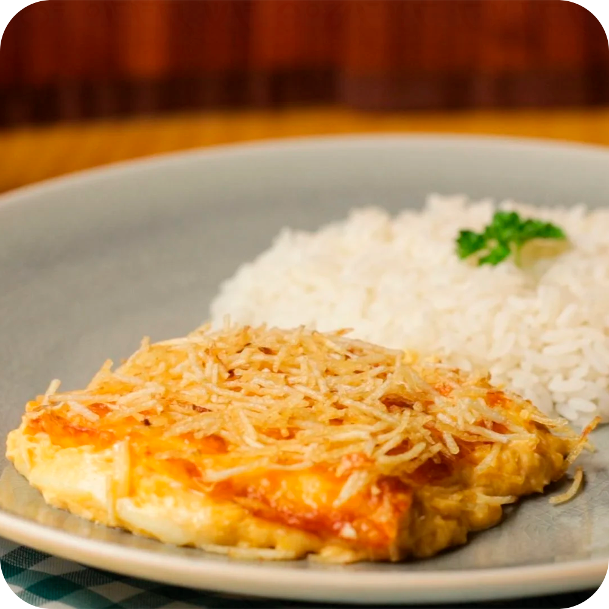

Fricassê de Frango
RECEITA
INGREDIENTES
- 1 lata de creme de leite
- 1 lata de milho verde
- 1 copo de requeijão cremoso
- 100g de azeitona sem caroço
- 2 peitos de frango desfiados
- 200g de mussarela fatiada
- 100g de batata palha
- 1 xícara de água
- 1 pitada de sal
MODO DE PREPARO
1. Bata no liquidificador o milho, o requeijão, o creme de leite e a água.
2. Refogue o creme do liquidificador com o frango desfiado, as azeitonas
e o sal até ficar com uma textura espessa.
3. Coloque o refogado numa assadeira, cubra com mussarela e espalhe
a batata palha por cima.
4. Leve ao forno até borbulhar.
5. Sirva com arroz branco.
